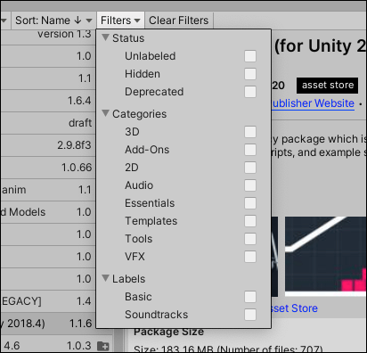

To narrow down which Asset StoreA growing library of free and commercial assets created by Unity and members of the community. Offers a wide variety of assets, from textures, models and animations to whole project examples, tutorials and Editor extensions. More info See in Glossary packages appear in the list, select the Filters drop-down control from the Package Manager window.

Filters for Asset Store packages
You can use the following types of filter options to help narrow down the list of Asset Store packages displayed:
The Status group lets you choose one Status to remove any package that doesn’t match. For example, if you choose Unlabeled, then only those Asset Store packages that you never assigned a label to appear in the list.
Choose any of the Categories to keep all Asset Store packages that match any selection.
Choose any of the Labels that you applied to your Asset Store packages before. You can search for the label name if you don’t see it right away. If you select more than one label, then only those packages that match any one label remain in the list.
If you need to start over, click the Clear Filters button beside the Filters drop-down control to reset all filter options to their default values.
Filtering Asset Store packages added in Unity 2020.1NewIn20201